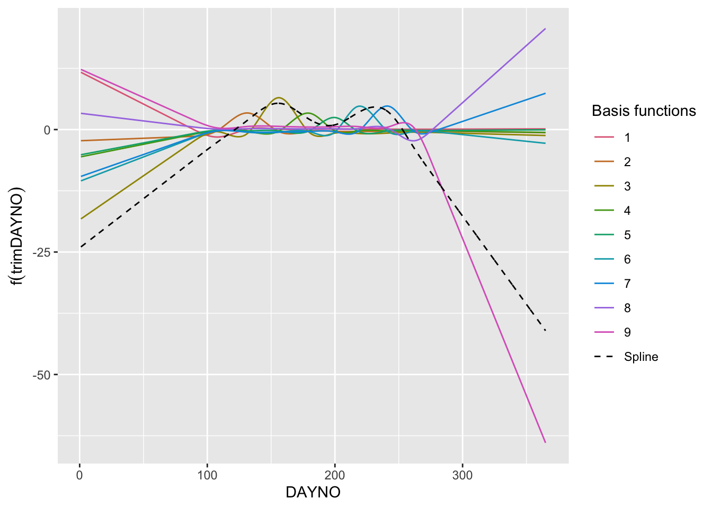

The flight curve underlying the observed butterfly counts can be seen as a function of time, with counts increasing as adult individuals emerge and decreasing as they die. In the case of a bivoltine species, we would expect two emergence phases over the year, one for each generation. The shape of this bimodal function can be represented by a spline derived from the GAM using the flight_curve function in the rbms package. By organising the simulated data into a table of monitoring visits and a table of counts, we can generate a time series of counts for the 2023 season.
The ts_dwmy_table function builds a time series where every day, week, month and year is informed for the defined period (InitYear and LastYear). We can then inform the monitoring season over the time series, informing the start and end month, if we want to include additional zeros (anchor) at the start and end of the monitoring season, and how strong the anchor should be. Here we will define a monitoring season that starts on April (4) 1 and ends on the last day of September (9). We will add anchors of two zeros positioned two days before and after the monitoring season. As the time series is defined on a daily (d) basis, the anchors and the position (lag) are in the same units.
We can now use the flight_curve function of the rbms package to fit a GAM and get the spline corresponding to the smoothed function of the number of butterflies recorded over the time series, days. Here we will fit the model on data simulated for one site over one year (2023). A site is only included if it has been visited at least five time over the season and had 3 visit with positive occurrence. Although this is not very relevant for this dataset, these filters can be useful to discard some poorly monitored site. Remember that the purpose of this model is to inform about temporal change in abundance related to species’ phenology and that this information is better in more complete time series and where the species and change in abundance has been adequately detected over the season.
When plotting the resulting flight curve, we can choose to plot the standardised form (NM), where the area under the curve is adjusted to sum to 1, or the curve converted to the count scale by multiplying the standardised curve by the total abundance. Here we plot the flight curve on the count scale.
The spline that represents the flight curve is build from addition of individual basis functions. Although the individual basis functions have no direct interpretation, it may be helpful to plot them to understand the building block of the spline and the mechanics of the Generalised Additive Model (GAM). To do this, we will use the R package gratia, which contains useful functions for exploring, evaluating and plotting GAMs. First we will retrieve the model, which is stored in the ts_flight_curve object under the slot, model. This is a list of annual flight curve models (GAM). Here we use the 1st model in the list (we only have one year, 2023). From this model we can retrieve the summary of the model and the number of knots used for the spline.
## retrieve basis for the smooth trimDAYNOx2_bs <-data.table(gratia::basis(mod, select ="s(trimDAYNO)", data = ts_flight_curve$data[, c("trimDAYNO")]))x2_spl <- x2_bs[, spline :=sum(.value), by = trimDAYNO]# plot GAM basisggplot() +geom_line(data= x2_bs, aes(x = trimDAYNO, y = .value, colour = .bf, group = .bf)) +geom_line(data = x2_spl, aes(x = trimDAYNO, y = spline, colour ="Spline"), lty =2) +labs(y =expression(f(trimDAYNO)), x ="DAYNO") +scale_colour_manual("Basis functions", breaks =c(1:9,"Spline"), values =c(qualitative_hcl(9, palette ="Dark 3"), 'black')) +theme(legend.key =element_blank())

You might think that this (black dashed line) does not really look like the flight curve estimated and returned by the rbms::flight_curve function. One thing to remember is that the model is fitted using the log-link, which means that the spline is estimated on the log scale and so are the bases that underlie the spline. The spline is the sum of the 9 basis functions. To demonstrate this, we can extract the spline that is the sum of the bases and then transform the spline to the count scale (i.e. exp()). Since we assume that the count outside the monitoring season is zero, we will multiply the result by the binary variable (0,1) M_SEASON. We will then normalise the spline so that the area under the curve sums to one.
Note
Note that the individual bases have no direct interpretation in the model other than as part of the building blocks of the spline, so their contribution must be considered in the context of the other bases. Also, it is the sum of the bases, the spline, that is optimised in the likelihood function. While the spline can be transformed back to the count scale, the basis should not be, as the spline is the sum of the basis in logarithmic rather than exponential scale.
Code
# retrieve the flight curve from the splinem_data_sp <-unique(merge(pheno, x2_spl[, .(trimDAYNO, spline)], by="trimDAYNO"))m_data_sp[, spline_nm :=exp(spline) * M_SEASON][, spline_nm := spline_nm/sum(m_data_sp$spline_nm)]# plot scaled spline and GAMggplot() +geom_line(data= m_data_sp, aes(x = trimDAYNO, y = spline_nm, colour ="Spline"), linewidth =1.5) +geom_line(data= pheno, aes(x = trimDAYNO, y = NM, colour ="Flight Curve")) +labs(y =expression(f(trimDAYNO)), x ="DAYNO")